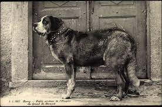
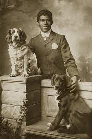
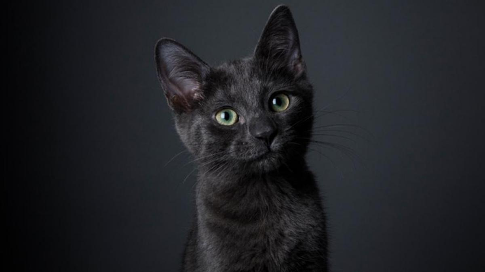

Siendo problabemente la mascota mas tenida en el mundo son conocidos como el mejor amigo del hombre,
Son muy juguetones, cariñosos y teniendo una notable lealtad explica como es un animal tan querido en el mundo
Existen muchas razas de perros, la mayoria, sin decir todas tienen sus diferencias unas son de un color otra de otro tamaño pero se pueden diferenciar facilmente

El primer perro del mundo nacio hace 32 mil 500 años al sur de siberia o como se conoce hoy rusia

Los perros han sido amigos de las personas desde hace 10 mil a 15 mil años aunque es posible que la relacion de los hombres y perros sea mucho mas antigua
Gatos
Los gatos son animales bastante tranquilos a comparacion de los perros pero aun asi siguen siendo cariñosos
Pero aunque sean tranquilos tambien pueden hacer trucos aunque se les complique mas que a los perros aprenderlos
Tambien los gatos tienen muchas razas aunque no tienen muchas diferencias a excepcion de unos como el maince coon que son gatos extremadamante grandes
Cuando llegan a tener gatitos suelen tener 4 o 5 gatitos

Los gatos negros en la antiguedad eran considerados de mala suerte siendo relacionados con las brujas asi que los mataban